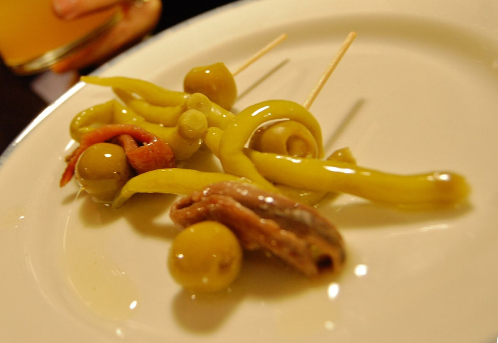
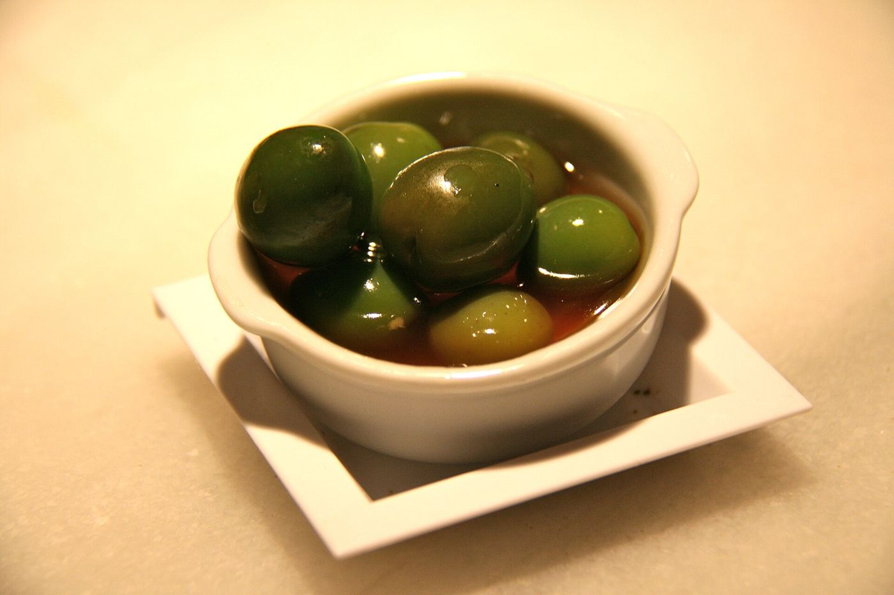
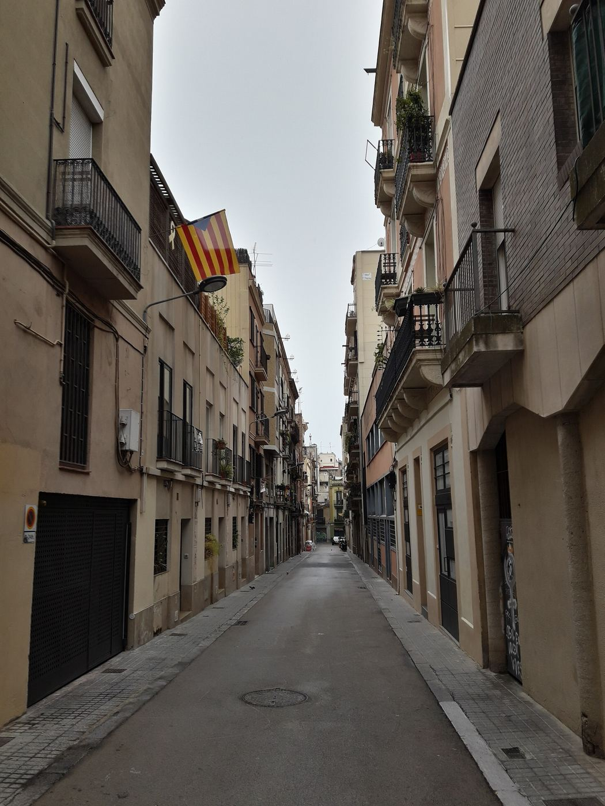
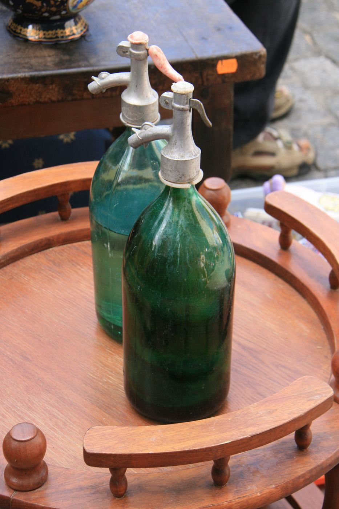
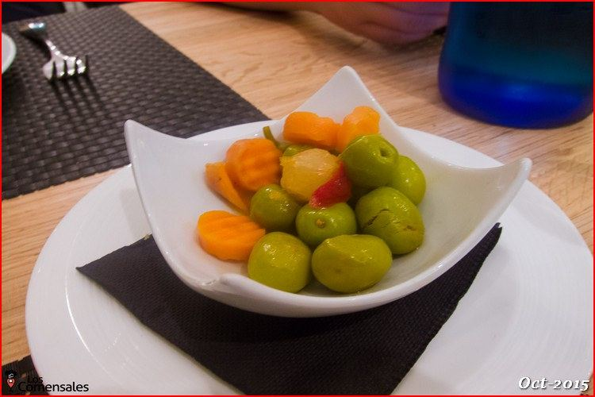
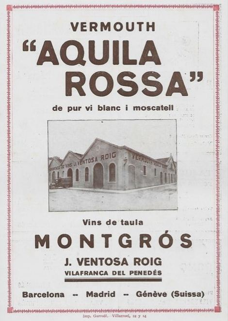

Vermut de grifo, sifón en la mesa y latas abiertas al momento. Fem un vermut? Los domingos abrimos a las 11:30.
En Gràcia el vermut tiene hora: la una del domingo. Sifón en la mesa, una gilda 
, aceitunas 
y medio barrio 
en la acera.
Vermut de Reus, sin botella
Llega en barrica de 30 litros desde Reus, la capital del vermut. Lo servimos frío, con hielo, piel de naranja y una oliva.
Va gratis. Siempre.
Cada mesa tiene su sifón de vidrio. El chorrito lo pones tú, como en casa de los abuelos.
Abiertas delante de ti
Berberechos, mejillones y navajas de conserveras gallegas, con patatas chips y nuestra salsa de vermut.
La carta
Precios con IVA. La carta cambia con lo que llega de la lonja y de las conserveras.
Vermuts copa
Llaunes lata
Per picar plato
Coses de la casa
Un bar pequeño · 34 personas


“Pides un vermut, te traen el sifón, y de repente son las cuatro.”Lo que dice todo el mundo
L'hora del vermut
Ahora en BarcelonaCalculando…
Sifó
Gràcia, Barcelona
Metro L3 Fontana · 4 min a pie
Sin reserva en barra, con reserva en mesa
Guarda'ns taula
Reserva en 20 segundos. Te confirmamos por WhatsApp. Para grupos de más de 8, escríbenos y montamos la mesa larga.